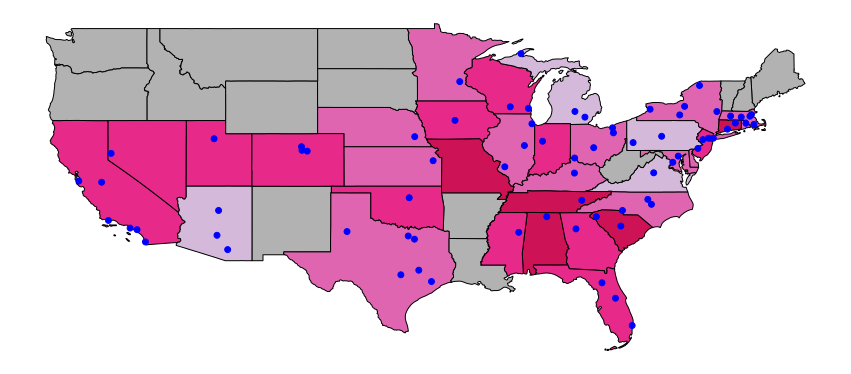

Main Page | Data | Acknowledgement | Results
Parts of our ANN code are based on or inspired by multiple online resources from this GitHub collection, this blog, and this Zhihu column.
Other code references are labelled in the notebook and python files.
We also thank Tyler for his help and instruction during the virtual office hour.
We thank Jaime Alberto Costales for some very constructive feedbacks on our map plot. Jaime suggests that we should use the USD/lab as the parameter in our choropleth map. This is a nice suggestion and obeys the general rule of modern cartography. However, after consideration, we chose to use our original plot, because what we really want to show in the map is the total amount of fundings received in each states. We do not really care about how much, on average, does a single lab receive, because the amount recived by each lab could be very different. Using the averaged plot would be not as persuasive as the total amount map in showing the overall popularity of the soft matters research.
Our original map and revised (but abandoned) map are plotted below:

The original map.
The map showing funding per lab.